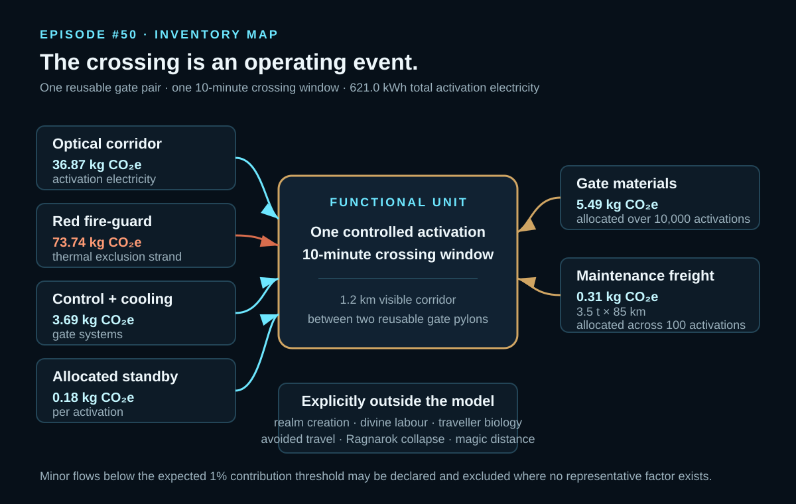
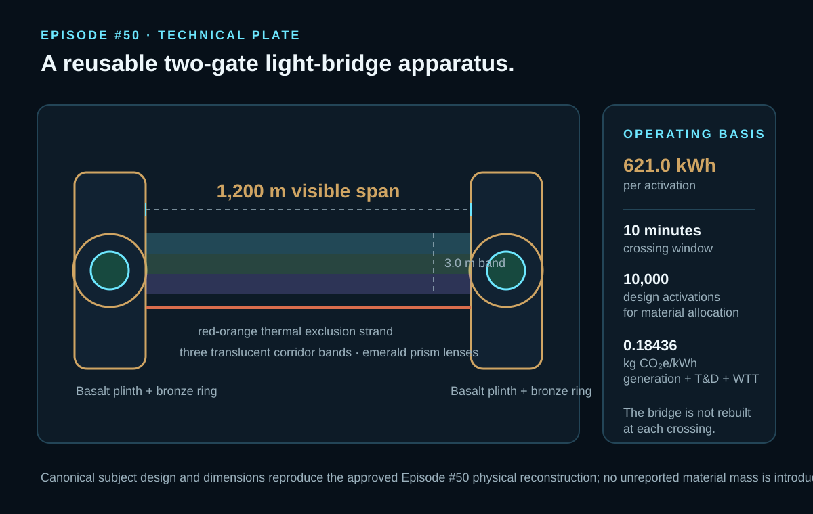
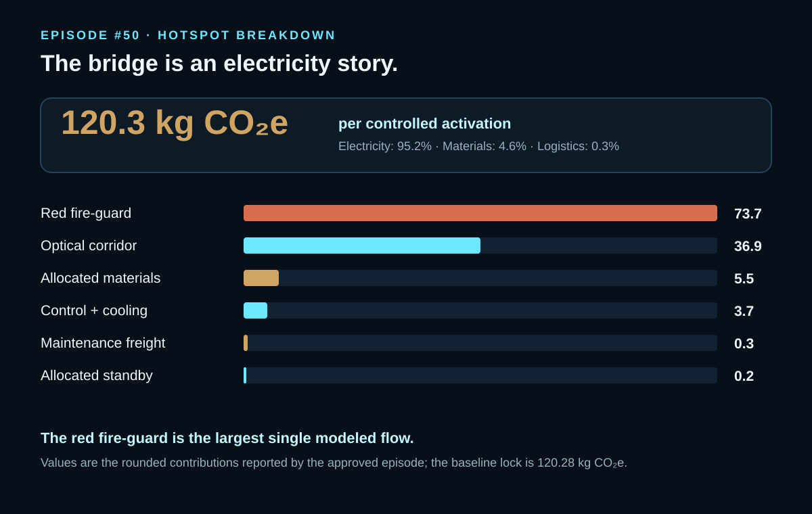

EPISODE #50 · MYTHS & LEGENDS
Bifrost
What happens when the bridge is reusable, but every crossing must be powered?
THE SUBJECT
The bridge burns before it carries.
The approved reconstruction treats Bifrost as a reusable two-gate light-bridge apparatus: a 1,200 m visible corridor with a 3.0 m walkable band, basalt plinths, bronze rings, emerald prism lenses, three translucent corridor bands and a red-orange thermal exclusion strand.
The functional event is one controlled activation lasting ten minutes. Operating energy stabilizes the light corridor, maintains the red fire-guard, runs gate controls and cools the system. Gate infrastructure is not rebuilt at every crossing; its materials are amortized across a 10,000-activation design life.
The boundary includes gate activation electricity, fire-guard energy, control and cooling, allocated gate materials and maintenance logistics. Realm creation, divine labour, traveller biology, avoided travel and Ragnarok collapse are excluded. Magic distance remains outside the modeled physical system.
1,200 m × 3.0 m
A visible light-bridge corridor between two reusable gate pylons.
621.0 kWh
Total electricity per activation at a composite factor of 0.18436 kg CO₂e/kWh.
95.2% electricity
The baseline is operational: materials are only 4.6% after amortization.
Fire-guard uncertainty
The red strand is the largest single modeled flow at 73.7 kg CO₂e and drives the widest physical sensitivity.
VISUAL MODEL
From reusable gates to one powered crossing
The graphics reproduce only the physical reconstruction, modeled flows and exclusions stated in the approved episode.


LIFE CYCLE INVENTORY
Reuse shifts the burden into activation energy.
The approved carousel reports the total activation electricity and impact sub-flows. It does not disclose the detailed material masses, so no material bill of quantities is invented here.
| Stage | Component / activity | Activity data | Climate change | Modelling basis |
|---|---|---|---|---|
| Operation | Activation electricity | 621.0 kWh / activation | 114.48 kg CO₂e | DEFRA 2026 composite electricity = generation 0.13096 + T&D 0.01299 + WTT generation 0.03682 + WTT T&D 0.00359 kg CO₂e/kWh. Sub-flow impacts: optical corridor 36.87; red fire-guard 73.74; control + cooling 3.69; allocated standby 0.18 kg CO₂e. |
| Infrastructure | Allocated gate materials | 1/10,000 of reusable gate material inventory | 5.49 kg CO₂e | Approved factor ledger: concrete 118.80 kg CO₂e/t; glass/crystal proxy 1,402.77; aluminium proxy 9,113.58; steel proxy 2,861.58. Component masses are not separately reported in the approved carousel. |
| Maintenance | HGV freight | 3.5 t × 85 km allocated across 100 activations = 2.975 t·km / activation | 0.31 kg CO₂e | DEFRA 2026 average non-refrigerated HGV diesel freight factor: 0.10356 kg CO₂e/t·km. |
Included
Gate activation electricity, red fire-guard energy, control and cooling, allocated gate materials and maintenance logistics.
Excluded
Realm creation, divine labour, traveller biology, avoided travel, Ragnarok collapse and magic distance.
Cut-off
Minor flows below the expected 1% contribution threshold are declared and excluded when no representative factor exists.
Evidence status
DEFRA 2026 factors are documented; myth and visible-light framing provide literature context; dimensions, mass, power and duration are engineering assumptions; the red fire-guard is a narrative proxy.
HOTSPOT
The bridge is an electricity story.
Electricity accounts for 95.2% of the approved baseline. The red fire-guard alone contributes 73.7 kg CO₂e.

Main result
120.3 kg CO₂e
Per controlled 10-minute activation.
Electricity
95.2%
The dominant life-cycle contribution.
Red fire-guard
73.7 kg CO₂e
The largest single modeled flow.
Allocated materials
4.6%
Gate infrastructure becomes secondary after 10,000-activation amortization.
Physical sensitivity
Lower light intensity → 101.8 kg CO₂e
Baseline → 120.3 kg CO₂e
Higher light intensity → 157.2 kg CO₂e
Cooler red strand → 83.4 kg CO₂e
Hotter red strand → 194.0 kg CO₂e
The approved baseline lock is 120.28 kg CO₂e. The red strand is the physical uncertainty that matters most.
Data sensitivity
Shorter design life → 125.8 kg CO₂e
Higher grid factor → 177.5 kg CO₂e
Low-carbon supply → 28.7 kg CO₂e
Shortening the gate life to 5,000 activations changes little. Electricity carbon intensity is the stronger data lever.
What the model tells us
A reusable bridge is not necessarily a material story. Once infrastructure is amortized, each crossing is dominated by the energy needed to stabilize light, maintain the fire-guard and operate the gates.
Boundary interpretation
Realm creation and avoided travel are excluded rather than converted into speculative credits or hidden burdens. The result describes one controlled physical activation only.
THE VERDICT
The bridge is not weightless; its burden is operational.